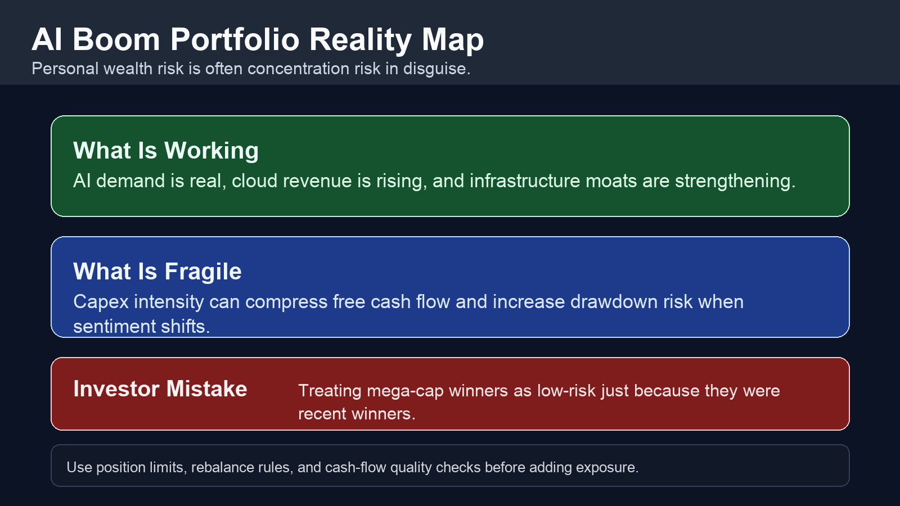
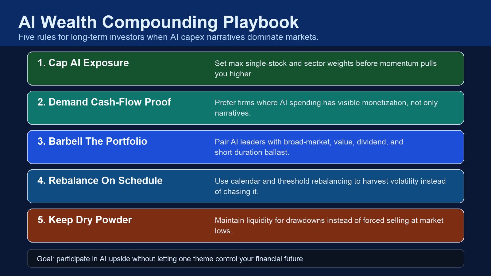

AI Boom Portfolios: Building Personal Wealth Without Concentration Blowups
The AI story is real. The personal-wealth danger is confusing strong narratives with low-risk compounding.
AI spending is accelerating across mega-cap platforms. That can create large winners for years. It can also create a fragile personal portfolio when one theme dominates your net worth. If your long-term plan depends on a small cluster of stocks, you are not just taking upside risk. You are taking sequencing risk: a deep drawdown at the wrong moment can delay financial independence by years.

What Is Real Right Now
1) Capex is scaling aggressively. Meta, Microsoft, Alphabet, and Amazon all signaled elevated AI infrastructure spending in recent earnings updates. This is not a niche trend; it is a balance-sheet level allocation shift.
2) Revenue leverage exists for some platforms. Cloud, ads, enterprise software, and AI-assisted productivity are producing monetization pathways. This supports the case for long-run winners.
3) Market leadership is narrow. A concentrated set of large names drives index behavior during AI enthusiasm phases. That boosts upside in momentum periods and increases downside if leadership rotates.
What Personal Investors Keep Missing
Myth: “If the AI thesis is correct, overweighting is always rational.” Thesis quality and position sizing are separate decisions.
Myth: “Index funds remove concentration risk.” Cap-weighted indexes still inherit leadership concentration when top names dominate returns.
Myth: “I can rebalance later.” Most investors rebalance least when they need it most: during euphoria and during fear.
The Personal-Wealth Framework
Step 1: Set hard exposure limits before emotion is involved. Define maximum weight for any single stock and for any single theme bucket. Write it down and treat breaches as mandatory rebalance events.
Step 2: Separate narrative winners from cash-flow winners. In capex-heavy cycles, free-cash-flow conversion and return-on-invested-capital discipline matter more than slide-deck optimism.
Step 3: Build a barbell. Keep AI upside, but pair it with broad market, quality value, income assets, and short-duration liquidity so your plan survives regime changes.
Step 4: Use two rebalancing triggers. One calendar trigger (quarterly or semiannual) and one threshold trigger (for example, any sleeve drifting above its max band).
Step 5: Keep optionality cash. A small reserve lets you add during drawdowns without forced selling. Optionality compounds.

How This Changes Real Decisions
If AI winners keep running, your rules force controlled participation instead of reckless concentration. If leadership breaks, your rules prevent panic decisions and preserve deployable capital. In both scenarios, you stop treating volatility as identity and start treating it as a portfolio input.
The objective is not to predict every AI earnings cycle. The objective is to stay solvent, stay invested, and keep compounding through cycles without one theme dictating your financial future.
Key Takeaways
The AI capex boom is a real structural trend, but that does not justify unbounded concentration in personal portfolios.
Personal wealth is built by risk-adjusted compounding, not by maximum narrative exposure.
Hard limits, scheduled rebalancing, and liquidity optionality are practical edges most investors can implement immediately.
The winning framework is simple: participate in upside, cap downside, and preserve the ability to keep investing through shocks.
Source List
Meta Platforms. (2026, January 28). Meta Reports Fourth Quarter and Full Year 2025 Results.
Alphabet. (2026, February 4). Alphabet Announces Fourth Quarter and Fiscal Year 2025 Results.
Microsoft. (2026, January 28). Microsoft Cloud Strength Drives Second Quarter Results.
Amazon. (2026, February 5). Amazon.com Announces Fourth Quarter Results.
Reuters. (2026, February 24). AMD clinches second mega chip supply deal, this time with Meta.
S&P Dow Jones Indices. (2026). S&P 500 Top 10 Index.